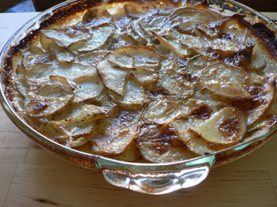

Gratin dauphinois
I’m entering what might be a Richard Olney phase in the kitchen right now, ever since I got my mitts on his Simple French Food, a highly addictive, splendidly entertaining cookbook and manifesto. If you can get past headnotes that contain statements such as this one, “Dipped in batter and deep fried, they are exquisite,” which refers to lambs’ balls, then this is a book worth owning. I’ve never read anything that made me want to get up from the couch and get my hands dirty the way this book does. The recipes and lifestyle it describes are so simple, so rustic, so appealing to my computer-abused, city-weary eyes.
Each recipe is entertaining and vivid, like a short story. In the headnote for scalloped potatoes, Olney discusses the aura of mystery the dish has acquired from so many variations. “Nearly every reputed restaurant has its celebrated gratin dauphinois and each is willing to divulge its recipe, usually incomprehensible and conceived in the interest of mystification.” Richard’s mission is to remove the mystery from these dishes, for the benefit of regular American cooks such as myself. He tells you what’s important (treating good ingredients with respect) and what isn’t (just about everything else).

For this gratin, I sliced three potatoes thinly in the food processor. I simmered them in milk just to cover for about ten minutes (adding a bit of salt) before pouring them into a glass pie plate that I had rubbed aggressively with a split garlic clove (you’re supposed to butter the dish, but I forgot this step). I poured about 1/4 cup of heavy cream on top, sprinkled a few shavings of cold butter, and put them into the 375ºF oven for about an hour, until well browned and very soft under the crust.
It’s a delicious, simple winter lunch, and fit for company with a green salad and a bit of wine.
Comments
Your gratin lovely. Perfect for any meal. I so enjoy reading your blog. Jan
This looks really delicious – I’ve been pondering Olney’s words ever since I read your post and wondering just what, exactly, would constitute treating good ingredients with disrespect? At first I thought maybe deep-frying everything, but then I reread your second sentence about lambs’ balls.
Upon further reflection I wondered if the molecular gastronomy fad might qualify. If creating foams out of chocolate, fish, olive oil, and perfectly good cheeses isn’t disrespect I don’t know what is.
ugggghhh my weakness, butter and potatoes. baked no less! sounds so perfect.
I love the simplicity of this. I’m always trying to “perk up” scalloped potatoes with bacon, caramelized onions and whatnot. They’re good, but I find that I prefer pure potatoes, butter and cream with a hint of garlic. Perfect!
I love the potatoes – and the book too! Did you know that Richard Olney wrote all the of Time Lifes Good Cook series? I am in the middle of collecting the whole series, cooking geek that I am!
Thank you, Jan, and thank you for reading!
I agree, Mommy. I can’t stand all that foam crap, although experimentation may eventually give way to something useful for regular cooks. Deep-frying, though, doesn’t seem too harsh to me. Lambs’ balls and other items develop a crust right away and then cook pretty quickly. It must be gentler than boiling in plain water, or roasting.
Thanks, Jeannie! It’s right up your alley.
I do the same thing, Anne. I’m planning a post about how I tried to jazz up the onion soup I made last week and ended up with a bowl full of boring.
I did know that, Freya, and that’s a wonderful set of books. I only have the fish one now, but I’ve glanced through all of them in the library. Do you have the variety meats? With the pig-face platter? That gave me nightmares!
Add a comment